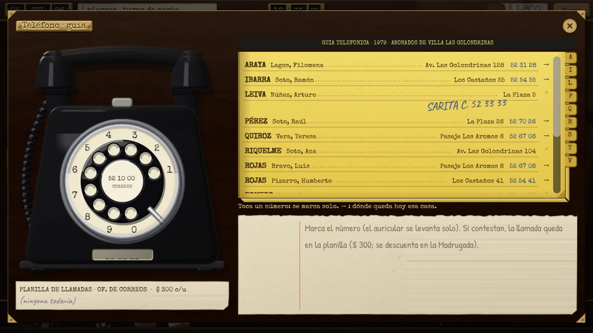
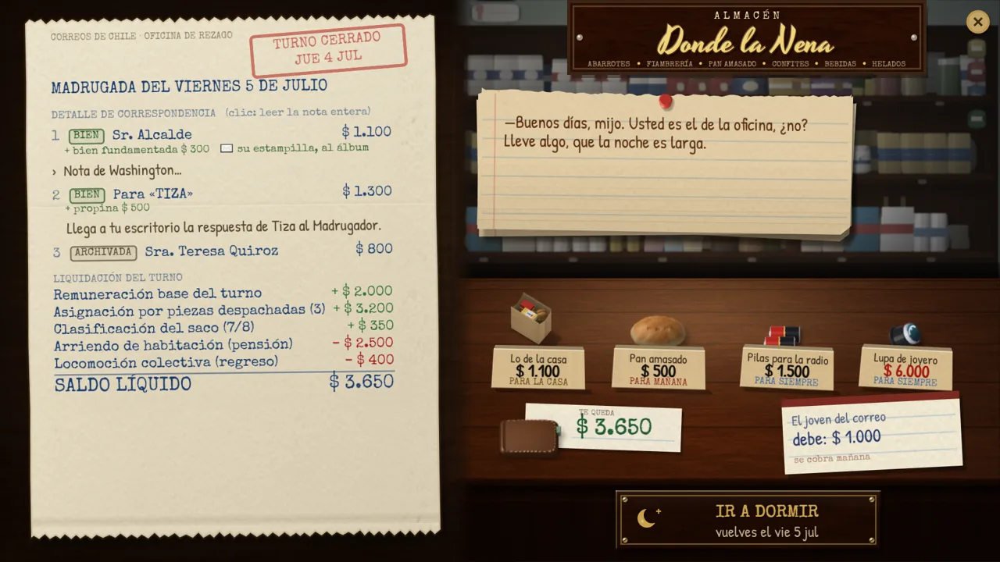

Publicado · oct 2026Released · Oct 2026
REZAGO: a quien corresponda
Aventura de deducción · Windows y Mac · gratis · 1,5 a 2 horas
Deduction adventure · Windows & Mac · free · 1.5–2 hours
Chile, invierno de 1996. El cartero del barrio murió y te dejó su libreta y las cartas que nadie pudo entregar. Durante cinco noches examinas sobres con lupa y luz UV, cruzas pistas con un mapa y llamas a los vecinos para descubrir a quién corresponde cada una.
Chile, winter of 1996. The neighborhood postman has died, leaving you his notebook and the letters nobody could deliver. Over five nights you examine envelopes with a magnifier and UV light, cross-check clues against a map and call the neighbors to find out who each letter belongs to.
Mi rol: todo el juego en solitario: diseño, escritura, programación, arte, sonido, localización y publicación. Programado con asistencia de IA (Claude Code) bajo mi dirección.
My role: solo developer: design, writing, programming, art, sound, localization and release. Programmed with AI assistance (Claude Code) under my direction.
- Sistema de deducción: cada pista de una carta se «ata» con hilo rojo a una casa del mapa o a una página de la libreta.
- Lupa con aumento en tiempo real que revela tinta UV letra por letra.
- 3 finales según lo que entregues, logros, guardado y Discord Rich Presence.
- 8 idiomas y builds automatizadas con Python.
- Deduction system: every clue in a letter is tied with red thread to a house on the map or a page in the notebook.
- Real-time magnifier that reveals UV ink letter by letter.
- 3 endings depending on what you deliver, achievements, saving and Discord Rich Presence.
- 8 languages and automated builds with Python.
Godot 4GDScriptPythonDiseño narrativoNarrative designLocalizaciónLocalization




